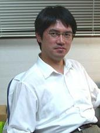

木村昭夫 教授

| 専門分野 | 固体物性 (磁性体、表面物性など) |
|---|---|
| 現在の研究課題 | 課題名： 磁性薄膜のスピン電子状態の研究 Spin Dependent Electronic States of Magnetic Thin Film 課題名： ナノ磁性体の内殻吸収磁気円二色性 Magnetic Circular Dichroism in Core Level Absorption of Nano-sized Magnetic Materials 課題名： 反転対称性の破れたナノ構造体の電子構造の研究 Electronic structure of nano-sized materials without inversion symmetry |
| 担当講義 | 1. Laboratory in Physical Science 2. 卒業研究 3. 物理科学実験 4. 物理学実験 5. 教養ゼミ 6. 研究指導 7. 光物性 8. 光物性セミナー 9. 物理科学特別研究 |
| メディア発表 | - 2010 - 09 / 28 新型トポロジカル絶縁体を世界で初めて発見 原著論文 ：K. Kuroda et al., Phys. Rev. Lett. 105, 146801 (2010) 解説文 ：Physics Synopsis 紹介記事：中国新聞, 広大HP 05 / 17 電子スピンの向きを揃える半導体表面の作製に成功 原著論文 ： K. Yaji et al., Nature Commun. 1, 17 (2010) プレス発表 : 解説記事 04 / 27 磁場で駆動する形状記憶効果のメカニズムを初めて解明 プレス発表 : 日本語解説 PDF 紹介記事 : 広大 HP - 2009 - 10 / 09 Si 半導体表面上で時間反転対称性の破れた Rashba 効果を世界で初めて観測 参考資料 : PDF file 02 / 28 半導体表面上で電子スピンが立ち上がる現象を世界で初めて観測 中国新聞、北國新聞 広島大学ホームページ その１、その２ |
| 国際学会 (Invite) | - 2011 - 学会名：International Symposium on Surface Science 題目：Spin textures at strongly spin-orbit coupled surface 場所：Tokyo, Japan 開催日：2011年 12月12 -12月15日 学会名：2011 Materials Resarchin Society Fall Meeting & Exhibit 題目：Manipulating the Dirac Fermions of the 3D Topological Insulators Studied by STM and Synchrotron Radiation ARPES 場所：Boston, America 開催日：2011年 11月28 -12月2日 - 2009 - 学会名：11th International Conference on Electronic Spectroscopy and Structure (ICESS11) 題目：Spin-resolved ARPES as a probe of surface and bulk electronic states 場所：Japan, Nara |
| 国内学会 (Invite) |
- 2012 - 学会名：日本物理学会 2012年 秋季大会 題目：トポロジカル絶縁体の実験：光電子分光の観点から 場所：横浜国立大学 開催日：2012年 9月 18 - 21日 - 2011 - 学会名：日本物理学会 2011年 秋季大会 題目：放射光 ARPES および STM でとらえる３次元トポロジカル絶縁体のDirac Fermion 場所：タワーホール船堀 開催日：2011年 12月 15 - 17日 学会名：日本物理学会 2011年 秋季大会 題目：放射光 ARPES で捉える３次元トポロジカル絶縁体のDirac Fermion 場所：富山大学 開催日：2011年 9月 21 - 24日 学会名：第10回飯綱・サイエンスサマー道場 題目：トポロジカル絶縁体の電子構造とスピン物性 場所：ホテルアルカディア、長野 開催日：2011年 8月 17 - 19日 |